Beyond DQN
Extensions to the DQN algorithm
1 - Distributional learning : Categorical DQN
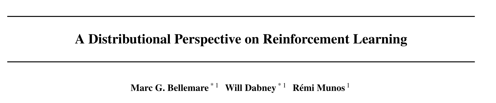
Distributional learning
- Until now, we have only cared about the expectation of the returns, i.e. their mean value:
\[V^\pi(s) = \mathbb{E}_\pi [R_t | s_t = s]\]
\[Q^\pi(s, a) = \mathbb{E}_\pi [R_t | s_t = s, a_t = a]\]
We select actions with the highest expected return, which makes sense on the long term.
Suppose we have two actions \(a_1\) and \(a_2\), which provide different returns with the same probability:
\(R(a_1) = \{100, 200\}\)
\(R(a_2) = \{-100, 400\}\)
Their Q-value is the same: \(Q(a_1) = Q(a_2) = 150\), so if you play them an infinity of times, they are both optimal.
But suppose that, after learning, you can only try a single action. Which one do you chose?
RL does not distinguish safe from risky actions.
Distributional learning
- The idea of distributional RL is to learn the distribution of returns \(\mathcal{Z}^\pi\) directly instead of its expectation:
\[R_t \sim \mathcal{Z}^\pi(s_t, a_t)\]

- Note that we can always obtain the Q-values back:
\[Q^\pi(s, a) = \mathbb{E}_\pi [\mathcal{Z}^\pi(s, a)]\]
Categorical DQN
In categorical DQN (Bellemare et al., 2017), we model the distribution of returns as a discrete probability distribution.
- categorical or multinouilli distribution.
We first need to identify the minimum and maximum returns \(R_\text{min}\) and \(R_\text{max}\) possible in the problem.
We then split the range \([R_\text{min}, R_\text{max}]\) in \(n\) discrete bins centered on the atoms \(\{z_i\}_{i=1}^n\).
Categorical DQN
The probability that the return obtained the action \((s, a)\) lies in the bin of the atom \(z_i\) is noted \(p_i(s, a)\).
A discrete probability dustribution can be approximated by a neural network \(F\) with parameters \(\theta\), using a softmax output layer:
\[ p_i(s, a; \theta) = \frac{\exp F_i(s, a; \theta)}{\sum_{j=1}^{n} \exp F_j(s, a; \theta)} \]
Categorical DQN
- The \(n\) probabilities \(\{p_i(s, a; \theta)\}_{i=1}^n\) completely define the parameterized distribution \(\mathcal{Z}_\theta(s, a)\).
\[\mathcal{Z}_\theta(s, a) = \sum_a p_i(s, a; \theta) \,\delta_{z_i}\]
where \(\delta_{z_i}\) is a Dirac distribution centered on the atom \(z_i\).
- The Q-value of an action can be obtained by:
\[ Q_\theta(s, a) = \mathbb{E} [\mathcal{Z}_\theta(s, a)] = \sum_{i=1}^{n} p_i(s, a; \theta) \, z_i \]
Categorical DQN
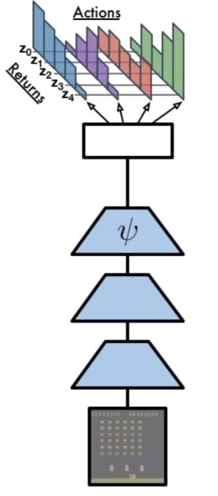
The only thing we need is a neural network \(\theta\) returning for each action \(a\) in the state \(s\) a discrete probability distribution \(\mathcal{Z}_\theta(s, a)\) instead of a single Q-value \(Q_\theta(s, a)\).
The NN uses a softmax activation function for each action.
Action selection is similar to DQN: we first compute the \(Q_\theta(s, a)\) and apply greedy / \(\epsilon\)-greedy / softmax over the actions.
\[ Q_\theta(s, a) = \sum_{i=1}^{n} p_i(s, a; \theta) \, z_i \]
The number \(n\) of atoms for each action should be big enough to represent the range of returns.
A number that works well with Atari games is \(n=51\):
- Categorical DQN is often noted C51.
Categorical DQN
How do we learn the distribution of returns \(\mathcal{Z}_\theta(s, a)\) of parameters \(\{p_i(s, a; \theta)\}_{i=1}^n\)?
In Q-learning, we minimize the mse between the prediction \(Q_\theta(s, a)\) and the target:
\[\mathcal{T} \, Q_\theta(s, a) = r + \gamma \, Q_\theta(s', a')\]
where \(\mathcal{T}\) is the Bellman operator.
\[\min_\theta (\mathcal{T} \, Q_\theta(s, a) - Q_\theta(s, a))^2\]
We do the same here:
- we apply the Bellman operator on the distribution \(\mathcal{Z}_\theta(s, a)\).
\[\mathcal{T} \, \mathcal{Z}_\theta(s, a) = r(s, a) + \gamma \, \mathcal{Z}_\theta(s', a')\]
- we then minimize the statistical “distance” between the distributions \(\mathcal{Z}_\theta(s, a)\) and \(\mathcal{T} \, \mathcal{Z}_\theta(s, a)\).
\[\min_\theta \text{KL}(\mathcal{T} \, \mathcal{Z}_\theta(s, a) || \mathcal{Z}_\theta(s, a))\]
Categorical DQN
Let’s note \(P^\pi \, \mathcal{Z}\) the return distribution of the greedy action in the next state \(\mathcal{Z}_\theta(s', a')\).
Multiplying the returns by the discount factor \(\gamma < 1\) shrinks the return distribution (its support gets smaller).
The atoms \(z_i\) of \(\mathcal{Z}_\theta(s', a')\) now have the position \(\gamma \, z_i\), but the probabilities stay the same.
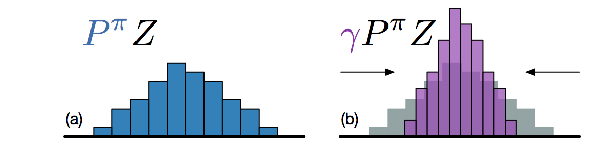
Categorical DQN
- Adding a reward \(r\) translates the distribution. The new position of the atoms is:
\[z'_i = r + \gamma \, z_i\]
- The corresponding probabilities have not changed.
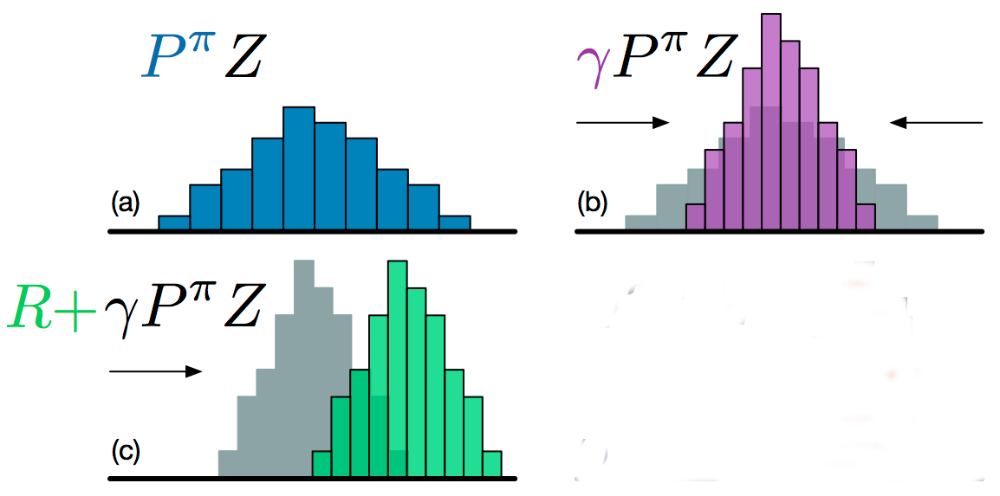
Categorical DQN
But now we have a problem: the atoms \(z'_i\) of \(\mathcal{T} \, \mathcal{Z}_\theta(s, a)\) do not match with the atoms \(z_i\) of \(\mathcal{Z}_\theta(s, a)\).
We need to interpolate the target distribution to compare it with the predicted distribution.
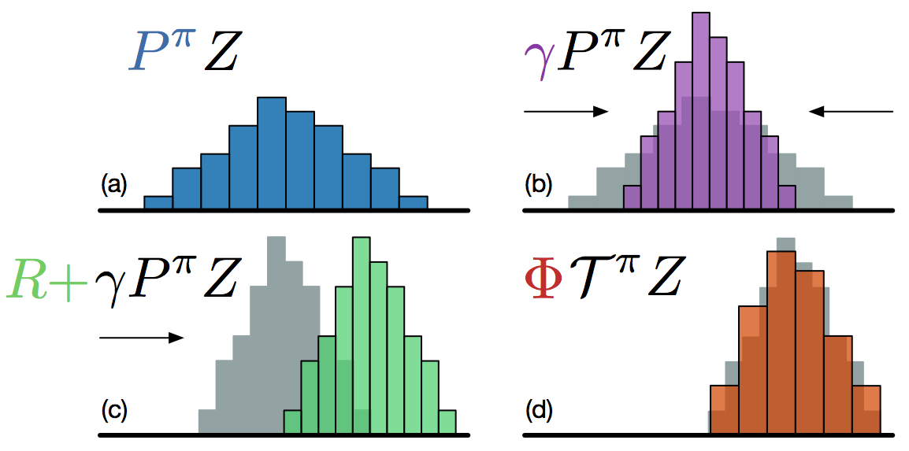
Categorical DQN
We need to apply a projection \(\Phi\) so that the bins of \(\mathcal{T} \, \mathcal{Z}_\theta(s, a)\) are the same as the ones of \(\mathcal{Z}_\theta(s, a)\).
The formula sounds complicated, but it is basically a linear interpolation:
\[ (\Phi \, \mathcal{T} \, \mathcal{Z}_\theta(s, a))_i = \sum_{j=1}^n \big [1 - \frac{| [\mathcal{T}\, z_j]_{R_\text{min}}^{R_\text{max}} - z_i|}{\Delta z} \big ]_0^1 \, p_j (s', a'; \theta) \]


Categorical DQN
We now have two distributions \(\mathcal{Z}_\theta(s, a)\) and \(\Phi \, \mathcal{T} \, \mathcal{Z}_\theta(s, a)\) sharing the same support.
We now want to have the prediction \(\mathcal{Z}_\theta(s, a)\) close from the target \(\Phi \, \mathcal{T} \, \mathcal{Z}_\theta(s, a)\).
These are probability distributions, not numbers, so we cannot use the mse.
We instead minimize the Kullback-Leibler (KL) divergence between the two distributions.
Kullback-Leibler (KL) divergence
Let’s consider a parameterized discrete distribution \(X_\theta\) and a discrete target distribution \(T\).
The KL divergence between the two distributions is:
\[\text{KL}(X_\theta || T) = \mathbb{E}_{t \sim T} [- \log \, \frac{X_\theta}{T}]\]

Kullback-Leibler (KL) divergence
- The KL divergence can be rewritten as the sum of the cross-entropy and the entropy of \(T\):
\[\text{KL}(X_\theta || T) = \mathbb{E}_{t \sim T} [- \log \, X_\theta + \log T] = H(X_\theta, T) - H(T)\]
- As \(T\) does not depend on \(\theta\), the gradient of the KL divergence w.r.t to \(\theta\) is the same as the gradient of the cross-entropy.
\[\nabla_\theta \, \text{KL}(X_\theta || T) = \mathbb{E}_{t \sim T} [- \nabla_\theta \, \log \, X_\theta]\]
Minimizing the KL divergence is the same as minimizing the cross-entropy.
Neural networks with a softmax output layer and the cross-entropy loss function can do that.
Cross-entropy
- In supervised learning, the targets \(\mathbf{t}\) are fixed one-hot encoded vectors.
\[\mathcal{L}(\theta) = \mathbb{E}_{\mathcal{D}} [ - \mathbf{t} \, \log \mathbf{y} ]\]
- But it could be any target distribution, as long as \(\mathbf{t}\) and \(\mathbf{y}\) share the same support.

Reminder: DQN
Initialize value network \(Q_{\theta}\) and target network \(Q_{\theta'}\).
Initialize experience replay memory \(\mathcal{D}\) of maximal size \(N\).
for \(t \in [0, T_\text{total}]\):
Select an action \(a_t\) based on \(Q_\theta(s_t, a)\), observe \(s_{t+1}\) and \(r_{t+1}\).
Store \((s_t, a_t, r_{t+1}, s_{t+1})\) in the experience replay memory.
Every \(T_\text{train}\) steps:
Sample a minibatch \(\mathcal{D}_s\) randomly from \(\mathcal{D}\).
For each transition \((s_k, a_k, r_k, s'_k)\) in the minibatch:
- Compute the target value \(t_k = r_k + \gamma \, \max_{a'} Q_{\theta'}(s'_k, a')\) using the target network.
Update the value network \(Q_{\theta}\) on \(\mathcal{D}_s\) to minimize:
\[\mathcal{L}(\theta) = \mathbb{E}_{\mathcal{D}_s}[(t_k - Q_\theta(s_k, a_k))^2]\]
Every \(T_\text{target}\) steps:
- Update target network: \(\theta' \leftarrow \theta\).
Categorical DQN
Initialize distributional value network \(Z_{\theta}\) and target network \(Z_{\theta'}\), experience replay memory \(\mathcal{D}\).
Every \(T_\text{train}\) steps:
Sample a minibatch \(\mathcal{D}_s\) randomly from \(\mathcal{D}\).
For each transition \((s_k, a_k, r_k, s'_k)\) in the minibatch:
- Select the greedy action in the next state using the target network:
\[a'_k = \text{argmax}_a \, \mathbb{E}[Z_{\theta'}(s'_k, a)]\]
- Apply the Bellman operator on the distribution of the next greedy action:
\[TZ_k = r_k + \gamma \, Z_{\theta'}(s'_k, a'_k)\]
- Project this distribution to the support of \(Z_\theta(s_k, a_k)\).
\[\mathbf{t}_k = \text{Projection}(TZ_k, Z_\theta(s_k, a_k))\]
Update the value network \(Q_{\theta}\) on \(\mathcal{D}_s\) to minimize the cross-entropy:
\[\mathcal{L}(\theta) = \mathbb{E}_{\mathcal{D}_s}[ - \mathbf{t}_k \, \log Z_\theta(s_k, a_k)]\]
Categorical DQN
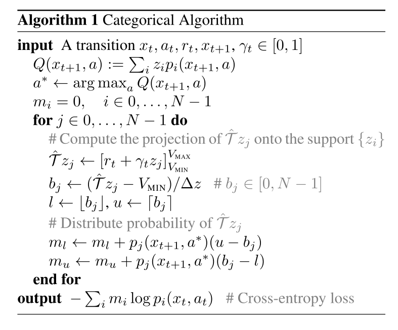
Categorical DQN
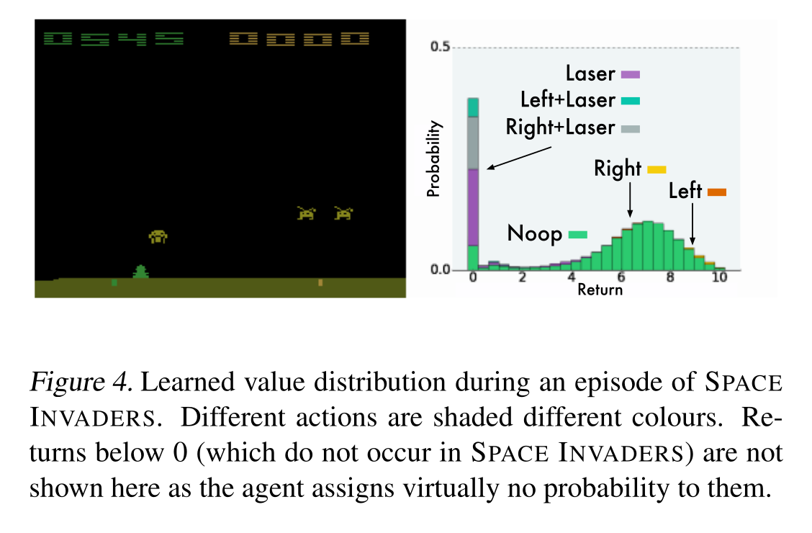
Categorical DQN
Having the full distribution of returns allow to deal with uncertainty.
For certain actions in critical states, one could get a high return (killing an enemy) or no return (death).
The distribution reflects that the agent is not certain of the goodness of the action. Expectations would not provide this information.

Categorical DQN
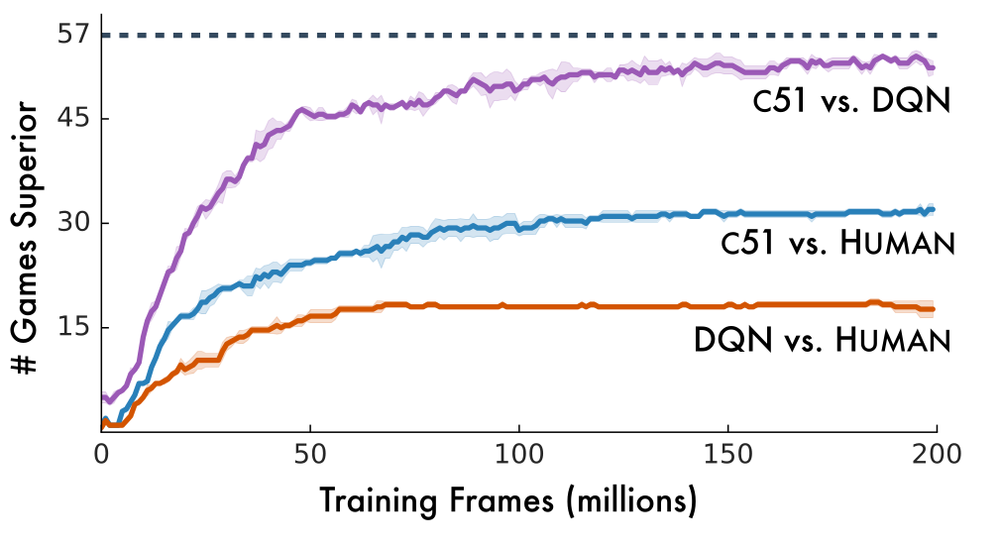
Categorical DQN
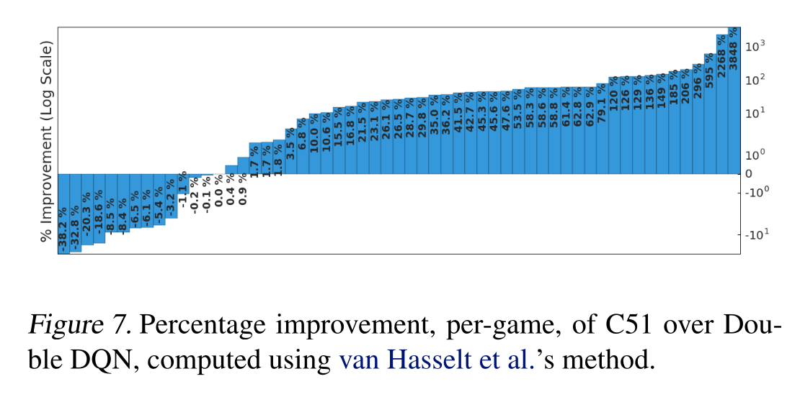
Categorical DQN
{{< youtube yFBwyPuO2Vg >}}Categorical DQN
{{< youtube d1yz4PNFUjI >}}Other variants of distributional learning
- QR-DQN:
@Dabney2017 Distributional Reinforcement Learning with Quantile Regression. arXiv:1710.10044
- IQN:
@Dabney2018 Implicit Quantile Networks for Distributional Reinforcement Learning. arXiv:1806.06923.
- The Reactor:
@Gruslys2017 The Reactor: A fast and sample-efficient Actor-Critic agent for Reinforcement Learning. arXiv:1704.04651.
2 - Noisy DQN
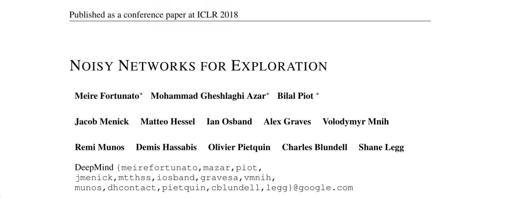
Noisy DQN
DQN and its variants rely on \(\epsilon\)-greedy action selection over the Q-values to explore.
The exploration parameter \(\epsilon\) is annealed during training to reach a final minimal value.
It is preferred to softmax action selection, where \(\tau\) scales with the unknown Q-values.
The problem is that it is a global exploration mechanism: well-learned states do not need as much exploration as poorly explored ones.
Noisy DQN
\(\epsilon\)-greedy and softmax add exploratory noise to the output of DQN:
- The Q-values predict a greedy action, but another action is taken.
What about adding noise to the parameters (weights and biases) of the DQN, what would change the greedy action everytime?
Controlling the level of noise inside the neural network indirectly controls the exploration level.

- Note: a very similar idea was proposed by OpenAI at the same ICLR conference:
@Plappert2018 Parameter Space Noise for Exploration. arXiv:1706.01905.
Noisy DQN
Parameter noise builds on the idea of Bayesian deep learning.
Instead of learning a single value of the parameters:
\[y = \theta_1 \, x + \theta_0\]
we learn the distribution of the parameters, for example by assuming they come from a normal distribution:
\[\theta \sim \mathcal{N}(\mu_\theta, \sigma_\theta^2)\]
- For each new input, we sample a value for the parameter:
\[\theta = \mu_\theta + \sigma_\theta \, \epsilon\]
with \(\epsilon \sim \mathcal{N}(0, 1)\) a random variable.
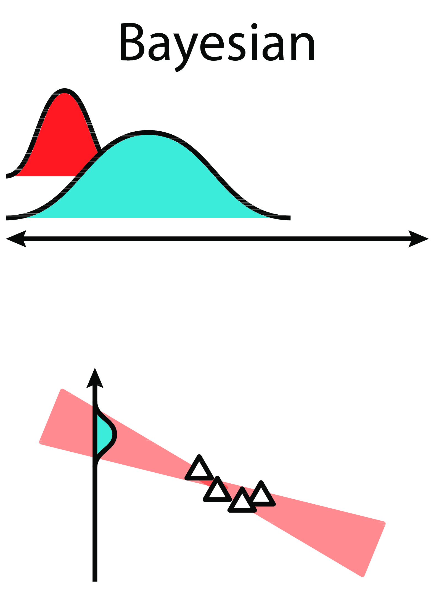
- The prediction \(y\) will vary for the same input depending on the variances:
\[y = (\mu_{\theta_1} + \sigma_{\theta_1} \, \epsilon_1) \, x + \mu_{\theta_0} + \sigma_{\theta_0} \, \epsilon_0\]
- The mean and variance of each parameter can be learned through backpropagation!
Noisy DQN
- Probabilistic weights:
\[\theta \sim \mathcal{N}(\mu_\theta, \sigma_\theta^2)\]
As the random variables \(\epsilon_i \sim \mathcal{N}(0, 1)\) are not correlated with anything, the variances \(\sigma_\theta^2\) should decay to 0.
The variances \(\sigma_\theta^2\) represent the uncertainty about the prediction \(y\).
Applied to DQN, this means that a state which has not been visited very often will have a high uncertainty:
The predicted Q-values will change a lot between two evaluations.
The greedy action might change: exploration.
Conversely, a well-explored state will have a low uncertainty:
- The greedy action stays the same: exploitation.
Noisy DQN
Noisy DQN uses greedy action selection over noisy Q-values.
The level of exploration is learned by the network on a per-state basis. No need for scheduling!
Parameter noise improves the performance of \(\epsilon\)-greedy-based methods, including DQN, dueling DQN, A3C, DDPG (see later), etc.

3 - Rainbow network
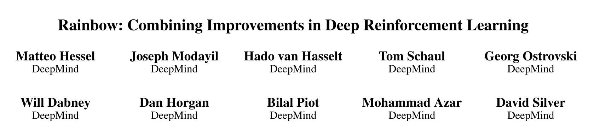
Raindow network
We have seen various improvements over a few years (2013-2017):
- Original DQN [@Mnih2013]
\[\mathcal{L}(\theta) = \mathbb{E}_\mathcal{D} [(r + \gamma \, Q_{\theta'}(s´, \text{argmax}_{a'} Q_{\theta'}(s', a')) - Q_\theta(s, a))^2]\]
- Double DQN [@vanHasselt2015]
\[\mathcal{L}(\theta) = \mathbb{E}_\mathcal{D} [(r + \gamma \, Q_{\theta'}(s´, \text{argmax}_{a'} Q_{\theta}(s', a')) - Q_\theta(s, a))^2]\]
- Prioritized Experience Replay [@Schaul2015]
\[P(k) = \frac{(|\delta_k| + \epsilon)^\alpha}{\sum_k (|\delta_k| + \epsilon)^\alpha}\]
- Dueling DQN [@Wang2016]
\[Q_\theta(s, a) = V_\alpha(s) + A_\beta(s, a)\]
- Categorical DQN [@Bellemare2017]
\[\mathcal{L}(\theta) = \mathbb{E}_{\mathcal{D}_s}[ - \mathbf{t}_k \, \log Z_\theta(s_k, a_k)]\]
- NoisyNet [@Fortunato2017]
\[\theta = \mu_\theta + \sigma_\theta \, \epsilon\]
Which of these improvements should we use?
Rainbow network
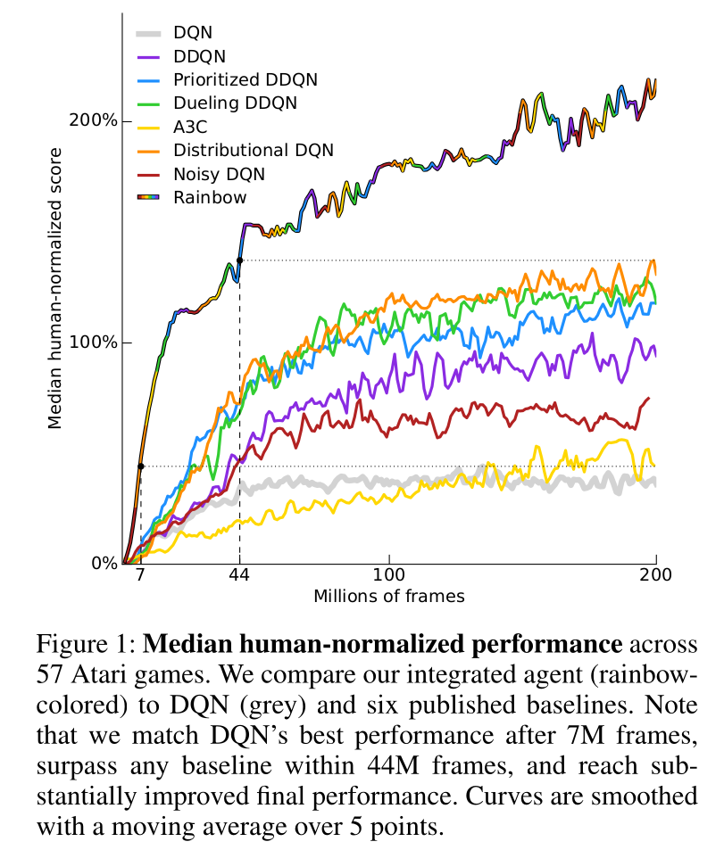
Answer: all of them.
The rainbow network combines :
double dueling DQN with PER.
categorical learning of return distributions.
parameter noise for exploration.
n-step return (n=3) for the bias/variance trade-off:
\[R_t = \sum_{k=0}^{n-1} \gamma^k r_{t+k+1} + \gamma^n \, \max_a Q(s_{t+n}, a)\]
It outperforms any of the single improvements.
Rainbow network
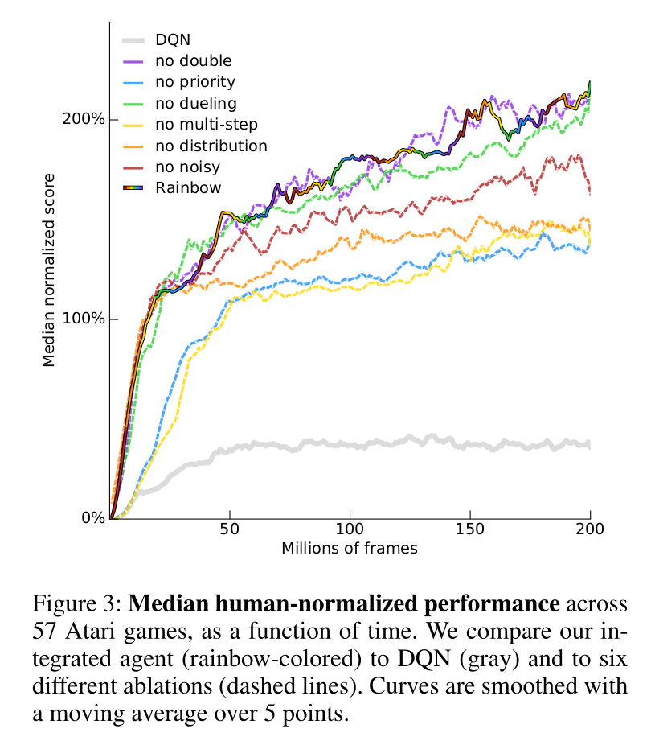
Most of these mechanisms are necessary to achieve optimal performance (ablation studies).
n-step returns, PER and distributional learning are the most critical.
Interestingly, double Q-learning does not have a huge effect on the Rainbow network:
- The other mechanisms (especially distributional learning) already ensure that Q-values are not over-estimated.
You can find good implementations of Rainbow DQN on all major frameworks, for example on
rllib:
https://docs.ray.io/en/latest/rllib-algorithms.html#deep-q-networks-dqn-rainbow-parametric-dqn
4 - DRQN: Deep Recurrent Q-network
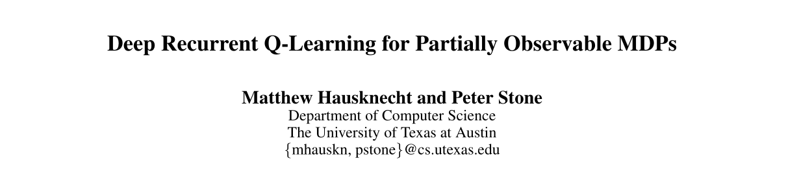
DRQN: Deep Recurrent Q-network
Atari games are POMDP: each frame is a partial observation, not a Markov state.
One cannot infer the velocity of the ball from a single frame.
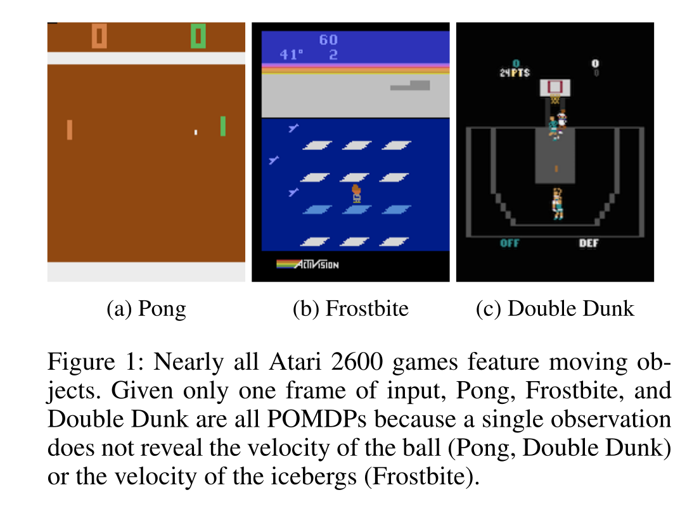
DRQN: Deep Recurrent Q-network

{kind=link}
The trick used by DQN and its variants is to stack the last four frames and provide them as inputs to the CNN.
The last 4 frames have (almost) the Markov property.
DRQN: Deep Recurrent Q-network

- The alternative is to use a recurrent neural network (e.g. LSTM) to encode the history of single frames.
\[ \mathbf{h}_t = f(W_x \times \mathbf{x}_t + W_h \times \mathbf{h}_{t-1} + \mathbf{b}) \]
The output at time \(t\) depends on the whole history of inputs \((\mathbf{x}_0, \mathbf{x}_1, \ldots, \mathbf{x}_t)\).
Using the output of a LSTM as a state representation, we can make sure that we have the Markov property, and RL will work:
\[ P(\mathbf{h}_{t+1} | \mathbf{h}_t) = P(\mathbf{h}_{t+1} | \mathbf{h}_t, \mathbf{h}_{t-1}, \ldots, \mathbf{h}_0) \]
DRQN: Deep Recurrent Q-network
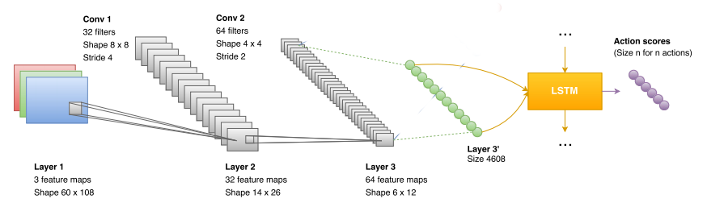
For the neural network, it is just a matter of adding a LSTM layer before the output layer.
The convolutional layers are feature extractors for the LSTM layer.
The loss function does not change: backpropagation (through time) all along.
\[\mathcal{L}(\theta) = \mathbb{E}_\mathcal{D} [(r + \gamma \, Q_{\theta'}(s´, \text{argmax}_{a'} Q_{\theta}(s', a')) - Q_\theta(s, a))^2]\]
DRQN: Deep Recurrent Q-network

DRQN: Deep Recurrent Q-network
The only problem is that RNNs are trained using truncated backpropagation through time (BPTT).
One needs to provide a partial history of \(T = 10\) inputs to the network in order to learn one output:
\[(\mathbf{x}_{t-T}, \mathbf{x}_{t-T+1}, \ldots, \mathbf{x}_t)\]
- The experience replay memory should not contain single transitions \((s_t, a_t, r_{t+1}, s_{t+1})\), but a partial history of transitions.
\[(s_{t-T}, a_{t-T}, r_{t-T+1}, s_{t-T+1}, \ldots, s_t, a_t, r_{t+1}, s_{t+1})\]
DRQN: Deep Recurrent Q-network
- Using a LSTM layer helps on certain games, where temporal dependencies are longer that 4 frames, but impairs on others.

DRQN: Deep Recurrent Q-network
Beware: LSTMs are extremely slow to train (but not to use).
Stacking frames is still a reasonable option.
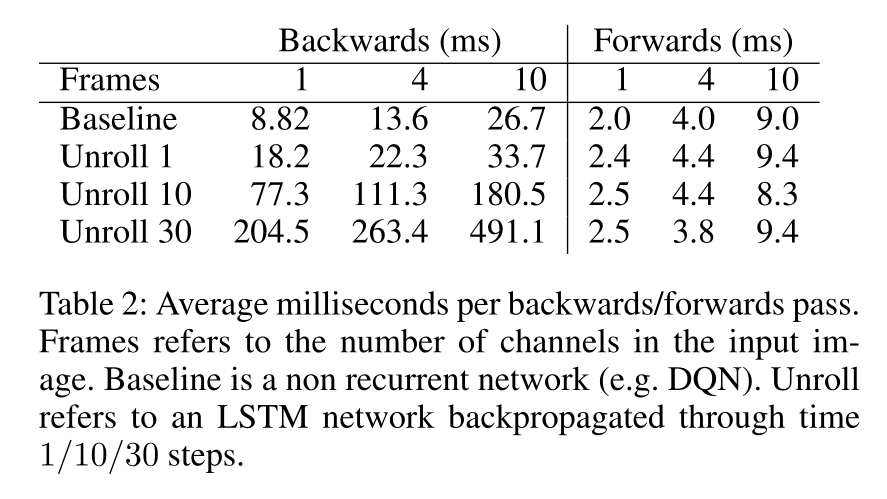
5 - Distributed learning: Gorila, Ape-X, R2D2
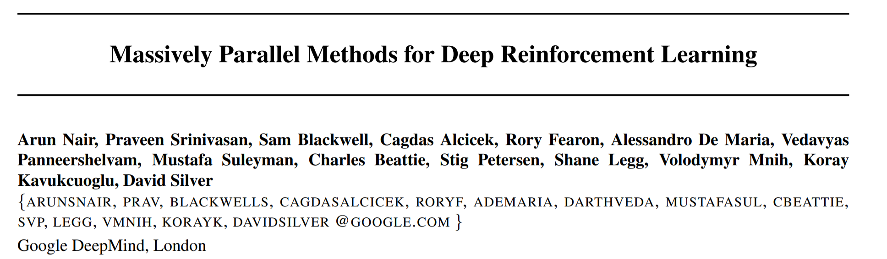
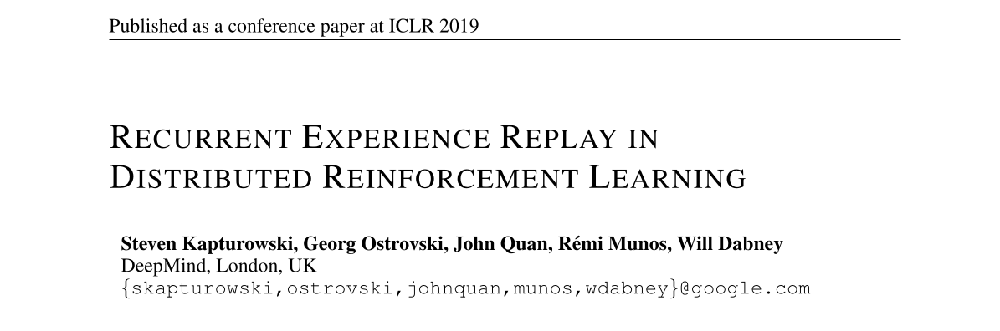
Gorila - General Reinforcement Learning Architecture
The DQN value network \(Q_\theta(s, a)\) has two jobs:
actor: it interacts with the environment to sample \((s, a, r, s')\) transitions.
learner: it learns from minibatches out of the replay memory.
The weights of the value network lie on the same CPU/GPU, so the two jobs have to be done sequentially: computational bottleneck.
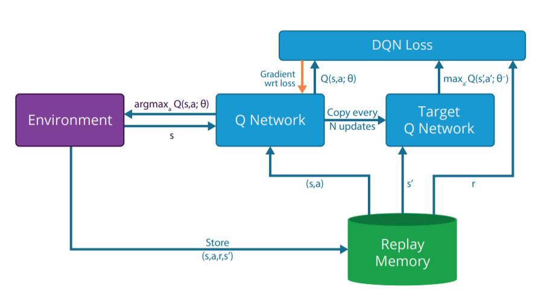
- DQN cannot benefit from parallel computing: multi-core CPU, clusters of CPU/GPU, etc.
Gorila
The Gorila framework splits DQN into multiple actors and multiple learners.
Each actor (or worker) interacts with its copy of the environment and stores transitions in a distributed replay buffer.
Each learner samples minibatches from the replay buffer and computes gradients w.r.t the DQN loss.
The parameter server (master network) applies the gradients on the parameters and frequently synchronizes the actors and learners.
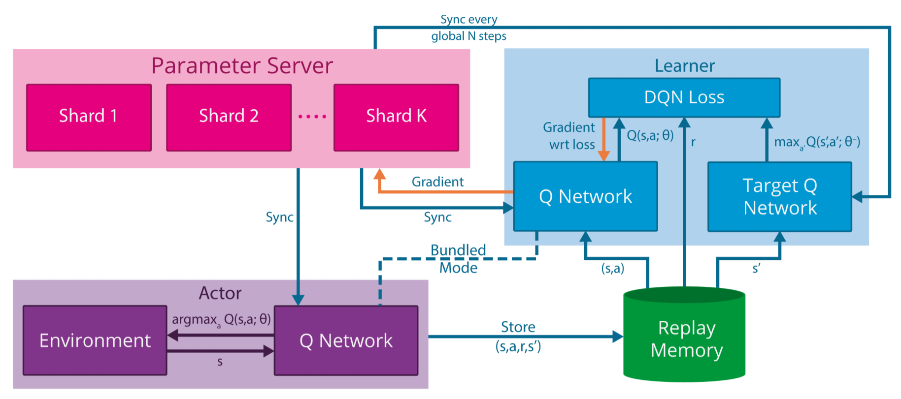
Gorila
- Gorila allows to train DQN on parallel hardware (e.g. clusters of GPU) as long as the environment can be copied (simulation).
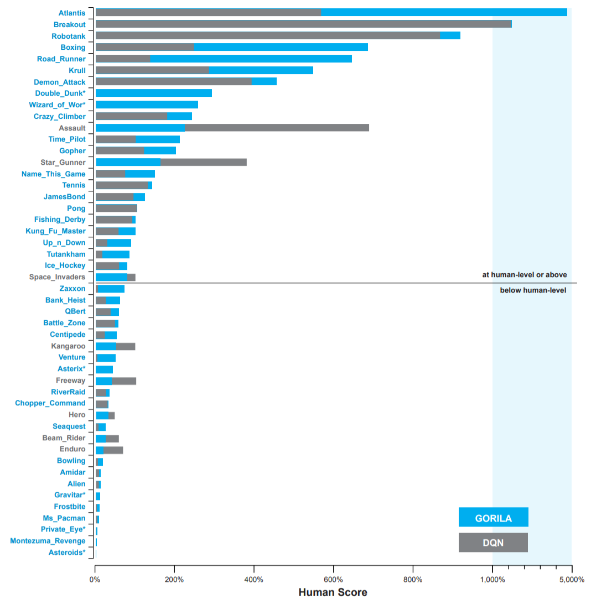
- The final performance is not incredibly better than single-GPU DQN, but obtained much faster in wall-clock time (2 days instead of 12-14 days on a single GPU).
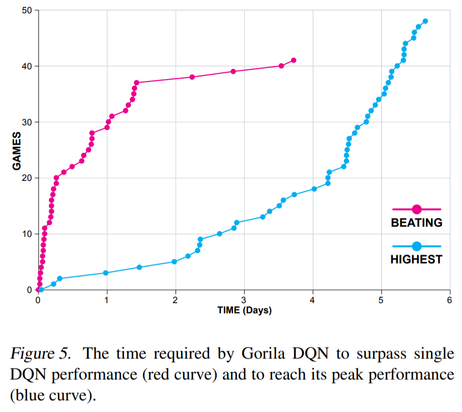
Distributed RL
Having multiple workers interacting with different environments is easy in simulation (Atari games).
With physical environments, working in real time, it requires lots of money…
Ape-X
With more experience, Deepmind realized that a single learner is better. Distributed SGD (computing gradients with different learners) is not very efficient.
What matters is collecting transitions very quickly (multiple workers) but using prioritized experience replay to learn from the most interesting ones.
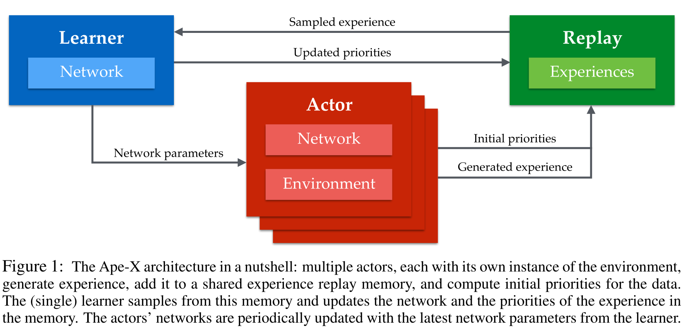
Ape-X
- Using 360 workers (1 per CPU core), Ape-X reaches super-human performance for a fraction of the wall-clock training time.
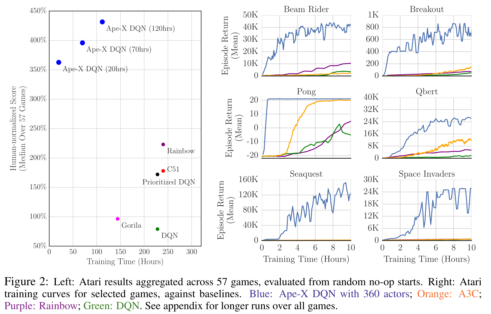
Ape-X
The multiple parallel workers can collect much more frames, leading to the better performance.
The learner uses n-step returns and the double dueling DQN network architecture, so it is not much different from Rainbow DQN internally.
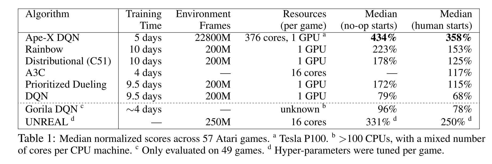
R2D2: Recurrent Replay Distributed DQN
R2D2 builds on Ape-X and DRQN:
- double dueling DQN with n-step returns (n=5) and prioritized experience replay.
- 256 actors, 1 learner.
- 1 LSTM layer after the convolutional stack.
Additionally solving practical problems with LSTMs (initial state), it became the state of the art on Atari-57 until 2019.
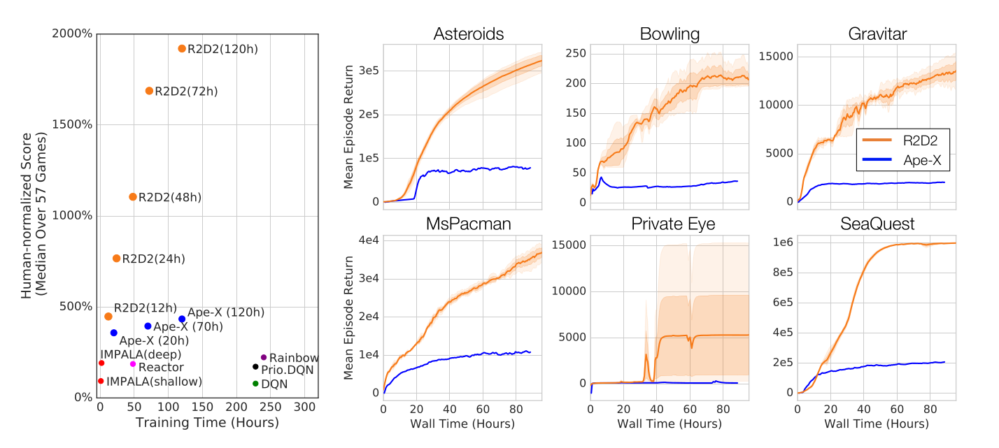